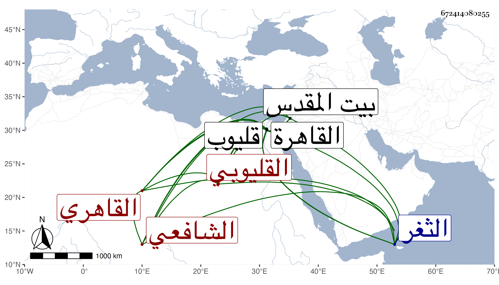

0902Sakhawi.DawLamic.ITO20230111-ara1.EIS1600.672414080255
Biography ID: 672414080255
534
علي بن إبراهيم بن سليمان بن إبراهيم نور الدين القليوبي ثم القاهري الشافعي ويعرف قديما بابن غنيمة بضم المعجمة ثم نون مفتوحة وبالقباني ثم بالقليوبي ولد في رمضان سنة خمس وستين وسبعمائة بقليوب وانتقل منها إلى القاهرة فحفظ بها القرآن والمنهاج الفرعي وعرضه على السراج بن الملقن واشتغل في الفقه على السراج البلقيني والشمس القليوبي والصدر الأبشيطي وأذن له في التدريس وسمع على الجمال الباجي أماكن من دلائل النبوة في سنة خمس وثمانين وعلى التقي الدجوي وأبي علي المطرز وعزيز الدين المليجي والشرف بن الكويك وكان يذكر أنه سمع على ابن رزين والصلاح البلبيسي وأنه دخل الثغر السكندري وسمع به على الشمس ابن يفتح الله والجمال الدماميني جد الشمس ناظر الجيش بالقاهرة وليس في كله ببعيد وناب في القضاء عن ابن خلدون المالكي ثم عن العماد الكركي الشافعي فمن بعده واستقر في أمانة الحكم ونظر الأوقاف ، وحج في سنة سبع وثلاثين وزار بيت المقدس غير مرة وحدث باليسير سمع منه الفضلاء أجاز لي ، وكان ربعة نير الشيبة منسوبا للتساهل في القضاء وهو الذي كان يتحدث في نظر المدرسة الفخرية بسويقة الصاحب وقصر في شأنها حتى سقطت منارتها على الربع المجاور لها بعد تحذير سكانه من ذلك وتهاونهم في النقلة وبلغ ذلك الظاهر جقمق فتغيظ عليه وتعدى لشيخنا كما بسطته في محل آخر مات في سادس عشر شوال سنة خمس وخمسين رحمه الله .
